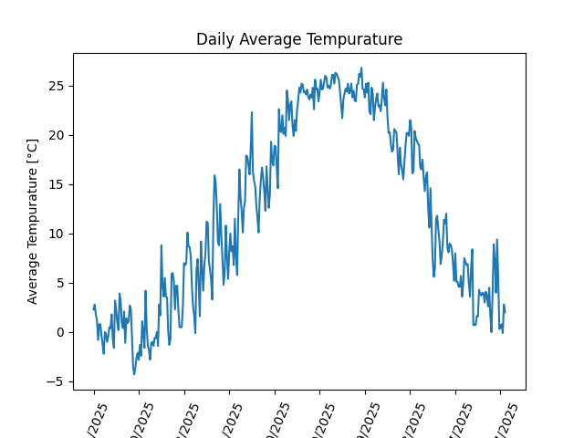
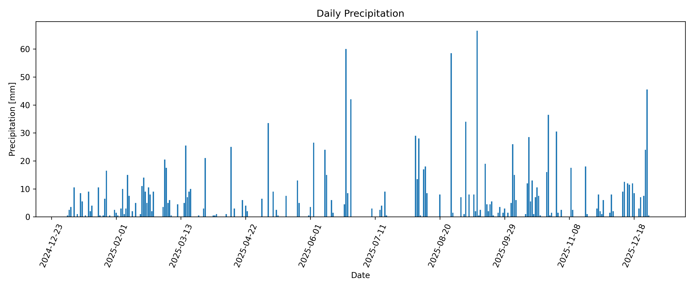
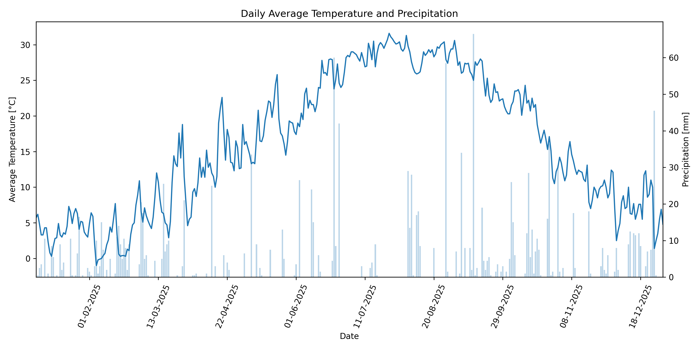

地球温暖化が騒がれる昨今、地球の気候の変化が注目されている。そこで私たちは気候に対しての関心を深めるために、年間の気温の変化と降水量にはどのような関係があるのか調べることにした。本サイトでは、2025年の１年間の舞鶴市の気温、降水量を調査し、その関係を考察する。
舞鶴の気温の変化は図1に示す

図1：2025年 舞鶴市の気温の推移
図1より、８月が30度をこえる日もあり１年を通してもっとも暑い、５～６月が最も気温の変化が激しい、９～１月にかけては、気温は緩やかに下がっていき、短期間で大きく気温が変化することはなかった。
舞鶴市の降水量の変化は図2に示す

図2：2025年 舞鶴市の降水の推移
雨の日が多いのは２～３月,９～１１月だった。降水量が最も多い日は６～８月に集中していた。全体を通して降水量が少ない日がある時期は雨の日が多く、降水量が多い日がある時期は雨の日自体は少ないが集中して大量の雨が降る傾向にあった。
舞鶴市の気温の変化と降水量の変化を合わせたグラフを図3に示す
